Abstract
Efficient water management and real-time environmental monitoring are crucial to achieving sustainable
agriculture, enhancing water quality, and responding to climate-related challenges, especially in
water-intensive crops such as sugarcane. This ongoing study describes the deployment, validation,
and continuous operation of a robust, user-friendly, and cost-effective LoRaWAN (Long Range Wide Area Network)
sensor network tailored specifically for Australian sugarcane farms.
We developed an integrated IoT solution that includes reliable sensors, gateways, and streamlined registration
processes designed explicitly for farmers. Sensor nodes, based on the robust Dragino SN50v3-LB units and
equipped with temperature and humidity sensors, were deployed strategically within sugarcane fields, with a
predicted battery life of 5-6 years. To maintain effective line-of-sight communication essential for LoRaWAN,
sensors were mounted on flexible, breakaway PVC poles at 3.5 meters above ground, overcoming the challenges
posed
by dense sugarcane growth.
An on-farm deployment has been running successfully at a sugarcane farm on the Atherton Tablelands, with sensor
nodes placed up to 1.9 kilometres from a central gateway (MultiTech Conduit® IP67 Base Station). Data captured
is transmitted in real-time and monitored via an intuitive smartphone application, providing immediate feedback
on environmental conditions.
Preliminary results indicate that the LoRaWAN system not only simplifies deployment and operation but also
significantly enhances the precision of monitoring essential agricultural parameters, while maintaining privacy.
This innovative approach improves farmers’ ability to manage resources sustainably, optimize crop yields, reduce
run-off, and increase resilience to climate variability.
Our findings demonstrate the potential of LoRaWAN technology as a scalable and sustainable solution for modern
agriculture, promoting better resource management practices and facilitating a practical response to the urgent
need for climate-smart agricultural systems. We plan to showcase operational devices at the conference, enabling
hands-on demonstration and deeper insight into their deployment and practical application.
Introduction
Sugarcane farming is a significant agricultural activity in Australia, particularly in Queensland. However,
traditional farming practices often lead to inefficient water usage and environmental degradation. The
integration of IoT technologies, specifically LoRaWAN, offers a promising solution to these challenges by
enabling real-time monitoring and data-driven decision-making.
By leveraging the capabilities of LoRaWAN, farmers can gain valuable insights into soil moisture levels, weather
conditions, and crop health, allowing for more precise irrigation and resource management.
A network infrastructure for a cane farm must address many criteria:
- Robustness
- Cane farms are hot, wet & sticky; tractors move fast.
- Simplicity
- The network must be easy to deploy and to use.
- Battery life
- Replacing batteries is costly and reduces reliability.
- Privacy
- Many farmers prefer not to share resource usage data.
- Reliability
- Unreliable systems waste water, energy and resources.
- Low cost
- Low unit cost allows for more units and therefore for denser coverage.
The design should minimise the requirement for expensive deployment & support skills.
Service costs should be avoided if possible and minimised if unavoidable.
LoRaWAN
LoRaWAN (Long Range Wide Area Network) is a low-power, wide-area networking protocol designed for IoT devices.
It enables long-range communication with minimal power consumption, making it ideal for agricultural
applications
where devices may be spread over large areas and require extended battery life.
For more details of the reasoning for its selection as the network protocol
see Network Overview.
Methodology
The study involved the deployment of LoRaWAN sensor nodes across a sugarcane farm located on the Atherton
Tablelands. The sensor nodes were based on Dragino SN50v3-LB units, equipped with temperature and humidity
sensors, and mounted on flexible PVC poles at a height of 3.5 meters to ensure optimal line-of-sight
communication.
A MultiTech Conduit® IP67 Base Station served as the central gateway, receiving data from the sensor nodes and
transmitting it to a cloud-based platform for real-time monitoring via a smartphone application.
Data collected included temperature, humidity, and signal strength metrics, which were analyzed to assess the
performance and reliability of the LoRaWAN network in the agricultural setting.
LoRaWAN Gateway
The
MultiTech Conduit® IP67 Base Station was selected for its robust design and reliable performance in
outdoor
environments. The gateway was configured and tested off-site. It was set to operate on the appropriate frequency
band for Australia (915 MHz) and optimized for maximum coverage across the sugarcane farm.
The gateway software was configured to allow remote management via secure connection.
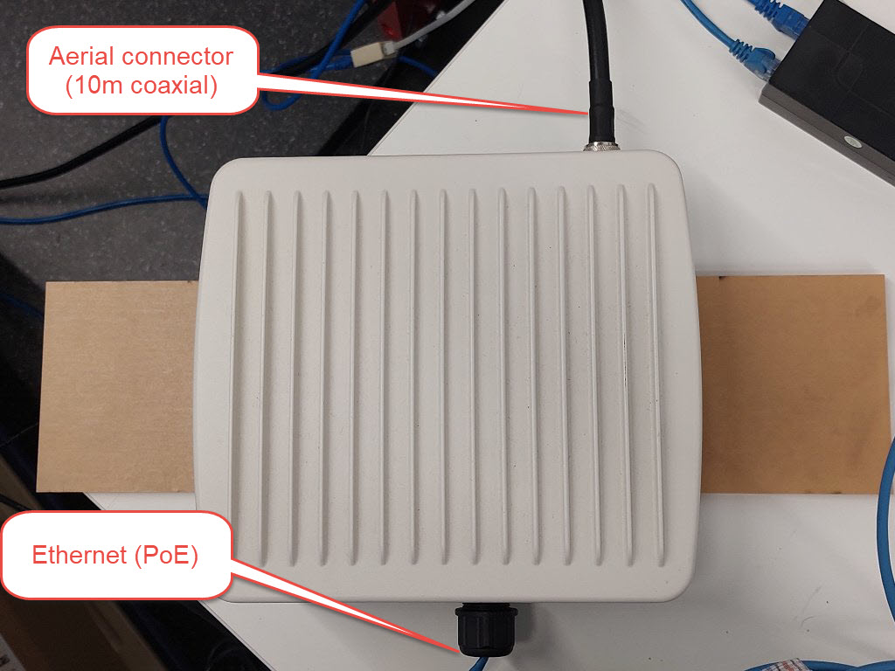
Figure 1: MultiTech Conduit® IP67 Base Station LoRaWAN Gateway
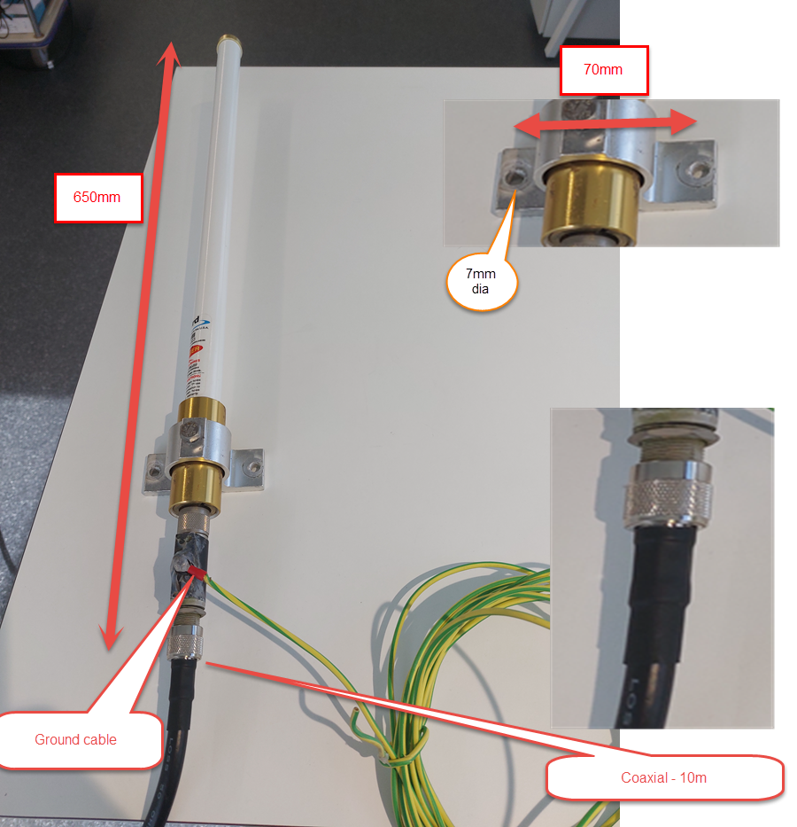
Figure 2: Gateway Aerial Connections
The selected installation site took advantage of an existing power pole, located next to a small pump shed.
The area around the pump shed is clear of trees and other line-of-sight interruptions.
The pole currently supports a Long-Range Outdoor Wireless Bridge, providing high bandwidth connectivity to the
farm's main network.
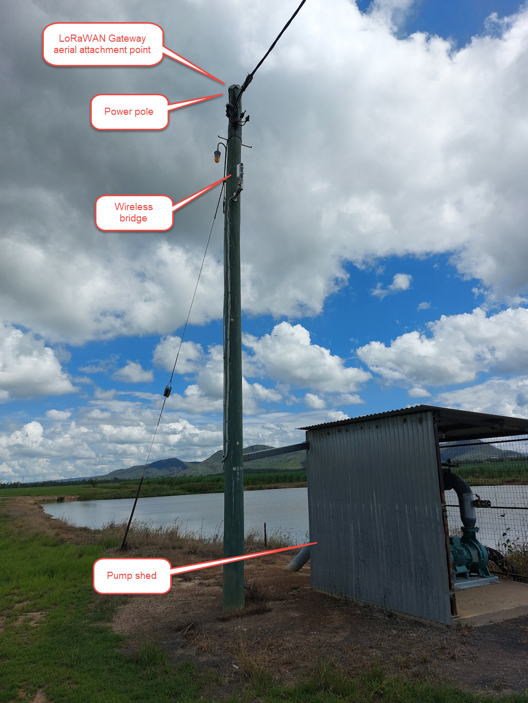
Figure 3: LoRaWAN Gateway Location
This version of the gateway is powered using Power-over-Ethernet (PoE).
Because of this, it does not require a separate power supply and can be easily installed in locations without
access to traditional power outlets. However, it does require a compatible PoE injector or switch to provide
power over the Ethernet cable if the supplied Ethernet connection does not support PoE. In this case, a PoE
injector (Nextech YN8040) was used to ensure proper power delivery.
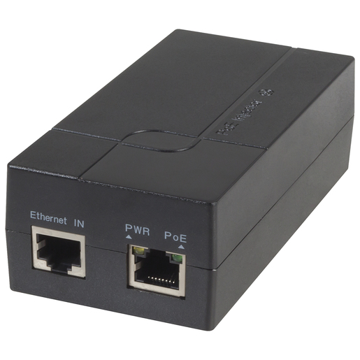
Figure 4: Nextech YN8040 PoE Injector
The gateway aerial was mounted on the existing power pole, and connected to the gateway via a 10m coaxial
cable.
The gateway itself was fixed to the interior wall of the pump shed, next to the power pole,
and connected to the farm's main network via Ethernet connection using the wireless bridge.
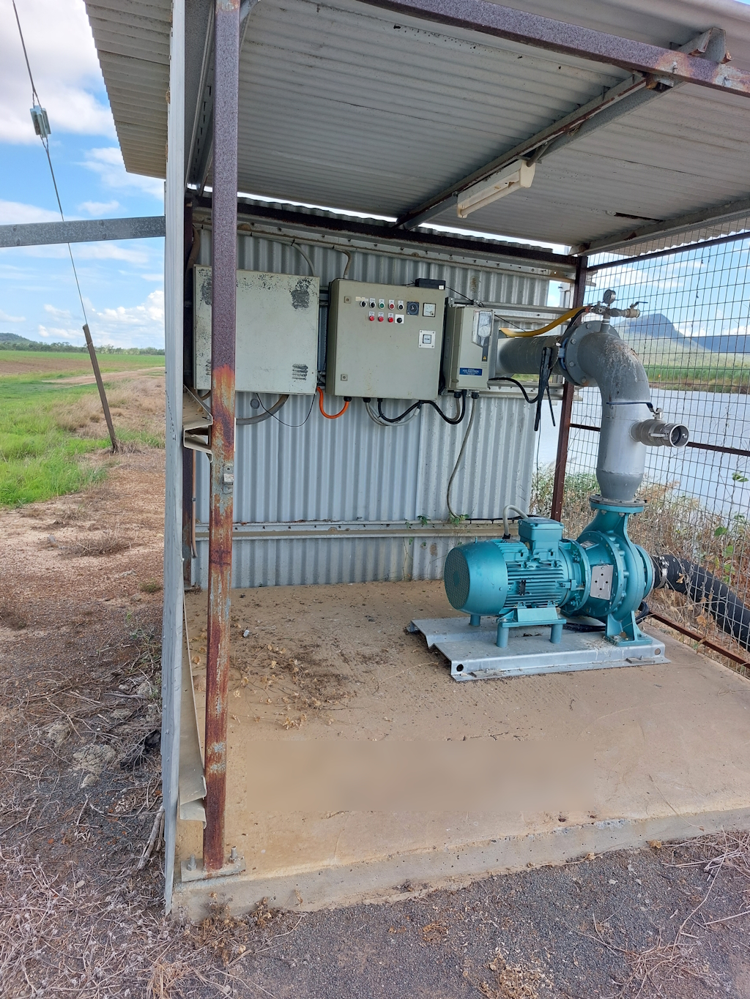
Figure 5: Pump Shed Interior
LoRaWAN Sensor Nodes
Sensor nodes were based on the Dragino
SN50v3-LB platform, chosen for its durability, long battery life, and
compatibility with LoRaWAN networks, and also for its relatively long product life and relatively
high-quality support. Each sensor node was equipped with temperature and humidity sensors to
monitor environmental conditions within the sugarcane fields.
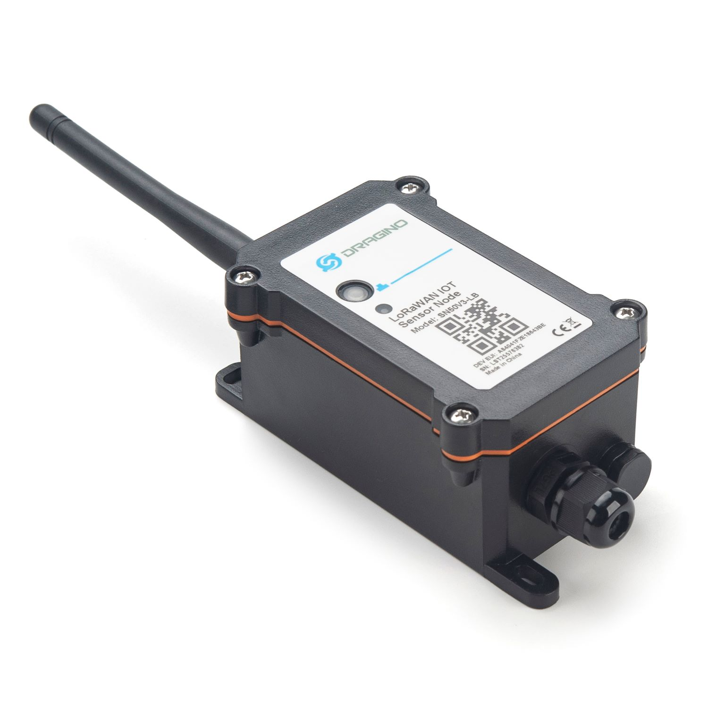
Figure 6: LoRaWAN Sensor Node
The use of these 3rd-party sensor nodes was decided after an analysis of the costs of designing and building
our
own nodes.
See Sensor node costs for more details.
We connected a temperature and humidity sensor breakout board (SHT31x) to the LoRaWAN sensor
node using the provided connectors, as shown in Fig. 7.
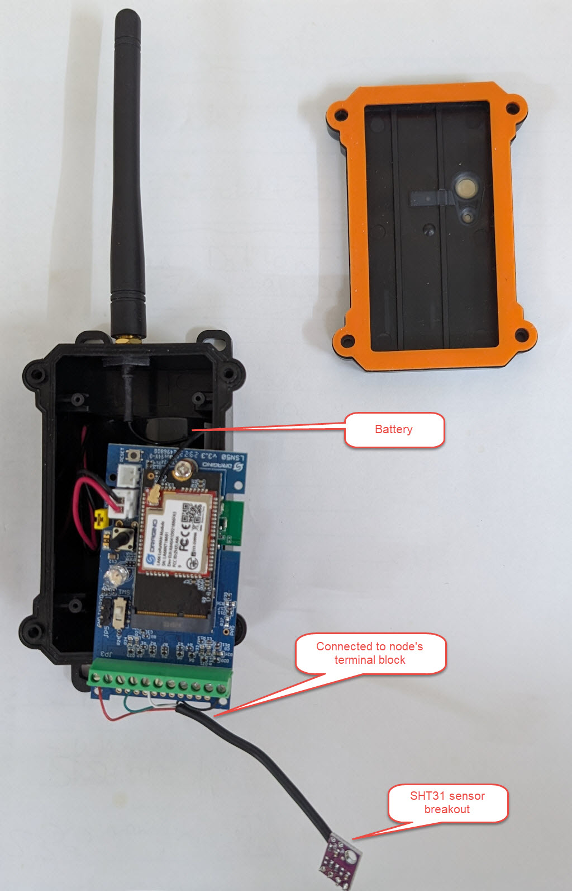
Figure 7: Connecting sensors to node
The device firmware was updated to support the new sensors and ensure proper communication with the LoRaWAN
network. See Firmware notes for more details.
Sensor Deployment
To ensure optimal performance of the LoRaWAN sensor nodes, they were mounted on flexible PVC poles at a height
of 3.5 meters above ground level. This height was chosen to provide a clear line-of-sight for communication with
the gateway, overcoming the challenges posed by dense sugarcane growth.
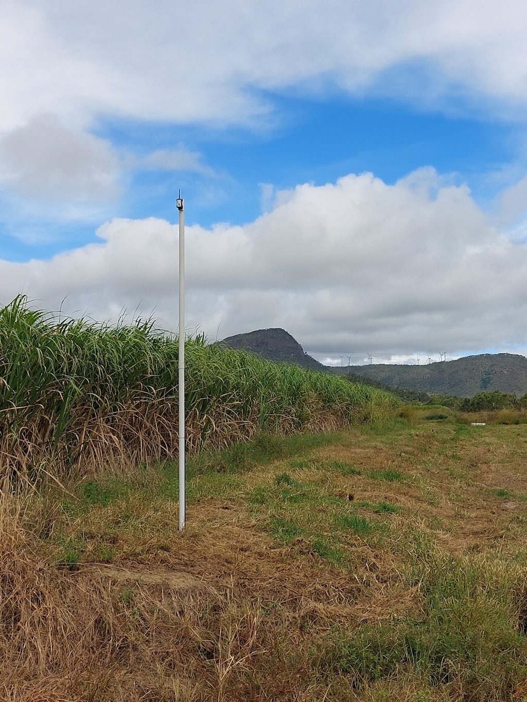
Figure 8: Sensor Node Mounted on PVC Pole
The flexible poles were designed to break away safely if struck by farm machinery, minimizing the risk of
damage to both the equipment and the sensor nodes.
The flexible poles were also designed to be easily replaceable, allowing for quick repairs in the event of
damage.
The sensor is screwed on to a 3d-printed bracket, which in turn is bolted to the PVC pole.
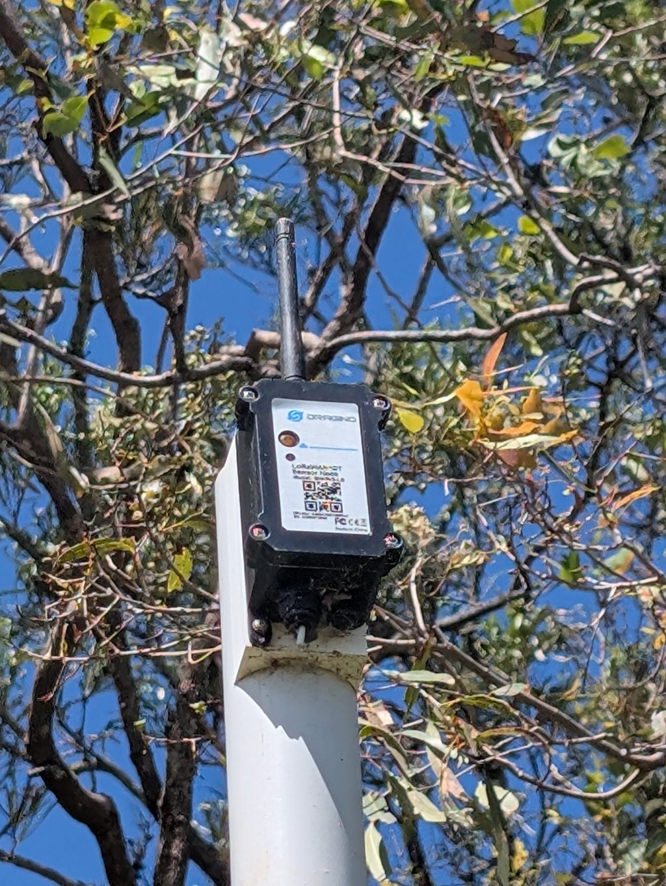
Figure 9: Sensor Node Attached to PVC Pole
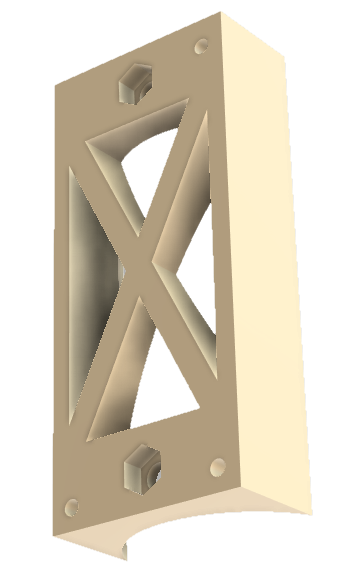
Figure 10: 3D-Printed Bracket for Sensor Node
The costs for each sensor node deployment were kept low by using readily available materials and components.
A list of the components used, along with their costs at the time of purchase, is provided in the table below.
Note that these unit costs do not include volume discounts.
The tools required for deployment were limited to the following:
- Post driver
- Drill with 8mm and 10mm bits
- Wrench or spanner for tightening bolts
- Measuring tape
- Marker or pencil for marking drill points
All tools and parts can be carried conveniently in the back of a standard ute.
The process of deployment takes a few minutes per pole:
- Drive the post into the ground using a post driver.
- Attach the sensor node to the pole using the mounting bracket.
- Attach the pole to the base using bolts and nuts.
- Secure all connections and ensure the sensor is properly positioned.

Figure 11: Sensor Deployment
Configuration
Configuring LoRaWAN nodes can be extremely complex and require a deep knowledge of languages & platforms. We
created a
unified list for each farm - a single source of truth - which controlled all phases and destinations of
deployment.
A redacted version of this list can be found in Static Data.
Connecting to the LoRaWAN Network
An Android phone app was used to register each node.
The app provides a simple and user-friendly interface for a non-technical user to connect the node
with the various software applications and platforms that need to process its data:
- LoRaWAN Network Server (The Things Stack)
- Cloud Data Platform (Losant)
- Mobile App (custom monitoring app for farmers)
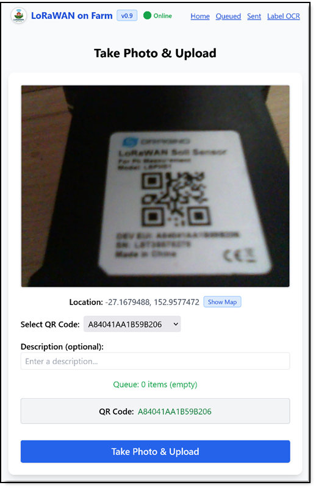
Figure 12: Android App for Sensor Registration
The app guides the user through a single-step registration process, and provides the following functionality:
- Use camera to scan QR codes on the sensor nodes for easy registration.
- Notes the precise location of the node using the device's GPS functionality.
- Allows the user to add any further notes or information about the node as needed.
- Registers the node with the LoRaWAN network using the gateway's management interface.
- If the Internet network is inaccessible, the app adds the sensor to a queue for
offline registration and later synchronization.
Once deployed, the node immediately begins transmitting data to the gateway,
which relays the information to the cloud platform for real-time monitoring and analysis.
The Things Network (TTN)
The Things Network (TTN) is a global, open-source LoRaWAN network that provides connectivity for IoT devices.
It offers a robust and scalable platform for managing LoRaWAN networks, making it an ideal choice for our
agricultural deployment.
In this project, TTN was used as the LoRaWAN Network Server, handling the communication between the sensor
nodes and the cloud platform. TTN's user-friendly interface allowed for easy management of the network,
including device registration, data routing, and monitoring.
For more information on TTN and its capabilities, refer to the official TTN website.
Security Considerations
While TTN offers robust security and privacy features, it requires continuous cloud connectivity for optimal
performance.
If connectivity is interrupted, data transmission may be delayed until the connection is restored.
In order to recover from interruptions, the system can implement a buffering mechanism to store data locally
until the connection is re-established.
Furthermore, as a public network, TTN may not fully meet specific privacy requirements for sensitive
agricultural data.
LoRaWAN deployments can make use of private LoRaWAN networks to enhance data security and privacy.
The open source LoRaWAN server software can be deployed on-premises or in a private cloud,
giving organizations full control over their data and network.
We are able to establish a private network using this software on
a Raspberry Pi 5 platform,
ensuring that the
agricultural data remains secure and compliant with privacy regulations,
and continues to accumulate data even during internet outages.
Dashboard Application
A custom dashboard application was developed to provide farmers with real-time access to the data collected
by the LoRaWAN sensor nodes. The dashboard offers an intuitive interface for monitoring environmental
conditions, including temperature and humidity levels as well as signal strength, across the farm.
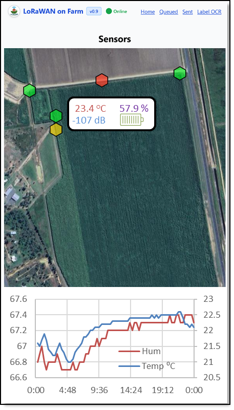
Figure 13: Dashboard Application on Mobile Device
The dashboard application includes features such as data visualization, alerts for critical conditions, and
historical data analysis.
It is accessible via both web browsers and mobile devices, ensuring that farmers can monitor their fields from
anywhere at any time.
Results and Discussion
The network was set up with 4 sensor nodes, each transmitting every 20 minutes, and then left unattended for its
18 months of operation. The nodes were unaffected by severe weather and flooding. When knocked over by harvesters,
the poles were easily replaced in position, without any data loss.
Selected data is available for inspection in the data files table below.
Robustness
The nodes were unaffected by severe weather and flooding. When knocked over by harvesters,
the poles were easily replaced in position, without any data loss.
Data Loss Events
Substantial amounts of data were lost because of failures outside the LoRaWAN network.
- Gateway power outages.
- Environmental problems such as flooding, storms and local infrastructure failures disrupted power supply.
Although the sensor nodes continued to function and to transmit data, the gateway was offline and unable to
receive it.
- Power system redesigns.
- Alterations to the farm's power infrastructure interrupted supply to the LoRaWAN Gateway device.
Once again, data was transmitted but not received during these periods.
- Licensing and payment issues with the dashboard application.
- Compliance, billing and licensing challenges can impact software functionality.
In this case, the dashboard application experienced downtime due to expired licenses and billing errors
and required re-activation.
Since the dashboard application in this deployment is responsible for long-term data storage,
this led to long gaps in the data.
Signal Strength
Signal strength was generally good across the deployment area, with Received Signal Strength Indicator (RSSI)
values ranging from approximately -120 dBm to -70 dBm. The nodes located closer to the gateway exhibited stronger
signal
strength, while those at the maximum distance of 1.9 kilometres showed slightly weaker signals, as expected.
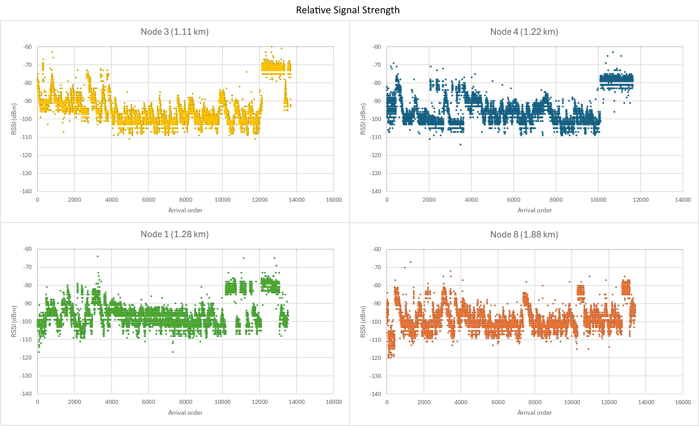
Figure 14: Signal Strength (RSSI) by Node
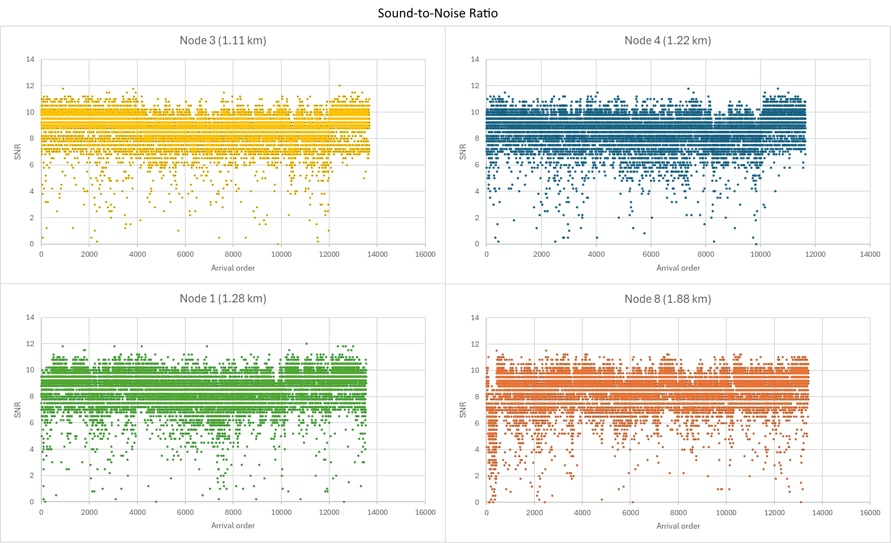
Figure 15: Signal-to-Noise Ratio (SNR) by Node
Signal Reliability
During periods where no large-scale data loss events (caused by external factors)
interrupted the network, the overall network performance remained stable, with consistent data transmission
and minimal packet loss.
During this time 7.18% of packets were dropped and did not reach the server, potentially creating gaps in the
record.
Of these gaps, 5.79% were single packets, 0.98% were double packets, and 0.41% contained three or more packets.
Details are shown in the table below.
| Gap size (number of packets) |
Number of occurrences |
Percentage of total packets |
| 0 (i.e. no packets dropped) |
48437 |
92.82% |
| 1 |
3020 |
5.79% |
| 2 |
513 |
0.98% |
| 3 |
142 |
0.27% |
| 4 |
51 |
0.10% |
| 5 |
20 |
0.04% |
These packet loss statistics indicate that while the LoRaWAN network performed well overall, there were
occasional
disruptions in data transmission.
By using a transmission frequency twice the required data rate, the effective loss rate can be reduced from 7.18%
to
1.39%, since losses of single packets would not contribute to the overall loss rate.
However, to address these issues, it would be preferable to implement a more robust error
correction mechanism and to optimize the network configuration for better performance.
Periodic monitoring of the signal, whereby the network application returns a checksum for the last N packets,
alongside adding behaviour to the sensor node whereby the last N packets are retained, and can be re-sent if
requested,
should be able to completely eliminate low-level data loss in future deployments.
Both these approaches will be applied in the next phase of the project.
Battery life
The sensor nodes were designed to operate for 5-6 years on a single set of batteries, based on the low power
consumption of the Dragino SN50v3-LB platform and the infrequent data transmission intervals.
Over the 18 months of operation, battery levels remained stable, with no significant drop in voltage observed.
This indicates that the nodes are functioning within their expected power consumption parameters and should
continue to operate effectively for the projected lifespan.
It is notable that three of the four nodes showed no measurable drop in voltage over the 18 months of use,
offering the possibility of significantly longer battery life.
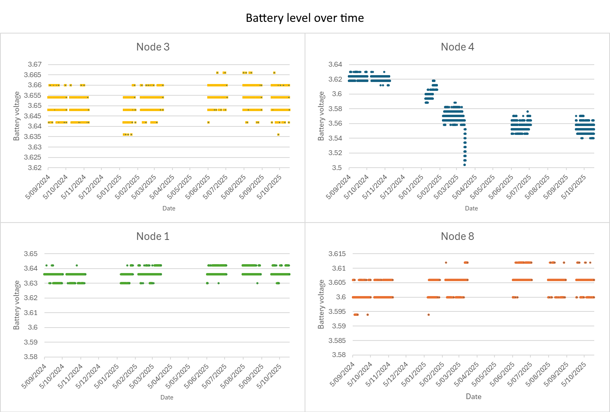
Figure 16: Battery Voltage over Time
Discussion
The deployment of the LoRaWAN sensor network on the sugarcane farm has been successful, with sensor nodes
transmitting data reliably to the gateway over distances of up to 1.9 kilometres. The real-time monitoring
capabilities provided by the dashboard application can therefore enable farmers to make informed decisions
regarding irrigation and resource management.
Preliminary analysis of the collected data indicates that the LoRaWAN network is performing well, with minimal
data loss and consistent signal strength across the deployment area. The flexible pole mounting system has proven
effective in maintaining line-of-sight communication, even in dense sugarcane growth.
Overall, the LoRaWAN-based IoT solution has demonstrated its potential to enhance sustainability and efficiency
in sugarcane farming, providing a scalable and cost-effective approach to environmental monitoring.
Conclusion
Preliminary results indicate that the LoRaWAN system not only simplifies deployment and operation but also
significantly enhances the precision of monitoring essential agricultural parameters, while maintaining privacy.
This innovative approach improves farmers’ ability to manage resources sustainably, optimize crop yields, reduce
run-off, and increase resilience to climate variability.
Our findings demonstrate the potential of LoRaWAN technology as a scalable and sustainable solution for modern
agriculture, promoting better resource management practices and facilitating a practical response to the urgent
need
for climate-smart agricultural systems.
Further work is planned, including a wider range of sensor types, and time
lapsed video data, analysed locally (on the node) using machine learning.